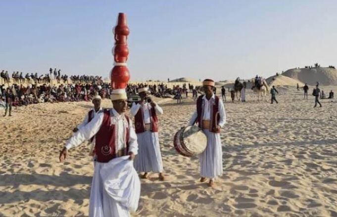
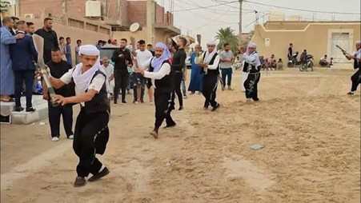

عروض فلكورية وشعبية
تُعد ولاية وادي سوف من أغنى ولايات الجنوب الجزائري بالتراث الثقافي والفلكلور الشعبي، حيث تعكس عروضها الفنية هوية الصحراء السوفية وتقاليدها العريقة المتوارثة عبر الأجيال.

محفل البرودة والزرنة
في ثقافة أهل وادي سوف، تعد الزرنة والبرودة من أهم مظاهر الاحتفال والفلكلور الشعبي التي ترافق المناسبات الاجتماعية والفعاليات الفنية والتراثية

المديح
المديح هو فنّ إنشاد ديني يقوم على ترديد قصائد وأشعار في مدح الرسول ﷺ وذكر الله، بأسلوب روحاني مؤثر، فردي أو جماعي، وغالبًا ما يكون مصحوبًا بإيقاع آلات تقليدية مثل البندير.

رقصته النخ
رقصة النَّخ في وادي سوف هي رقصة شعبية تراثية تُؤدى في الأعراس والمناسبات الوطنية والاحتفالات التقليدية. تُعتبر من أبرز مظاهر الفنون الشعبية في المنطقة، وتعكس روح الفرح والتضامن بين أبناء المجتمع السوفي.